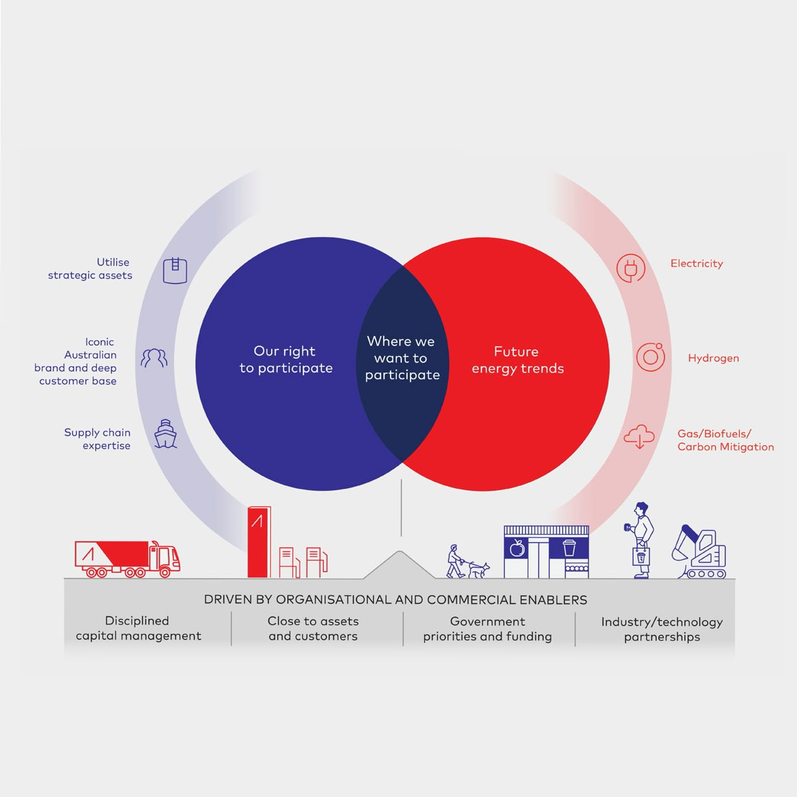
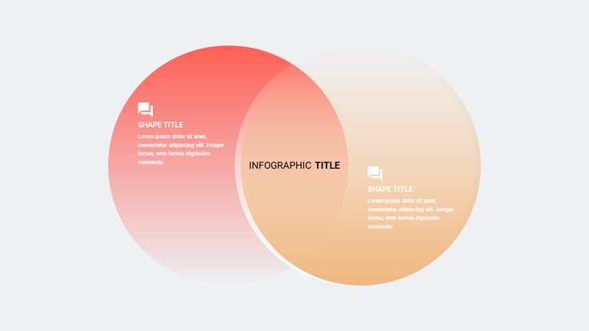
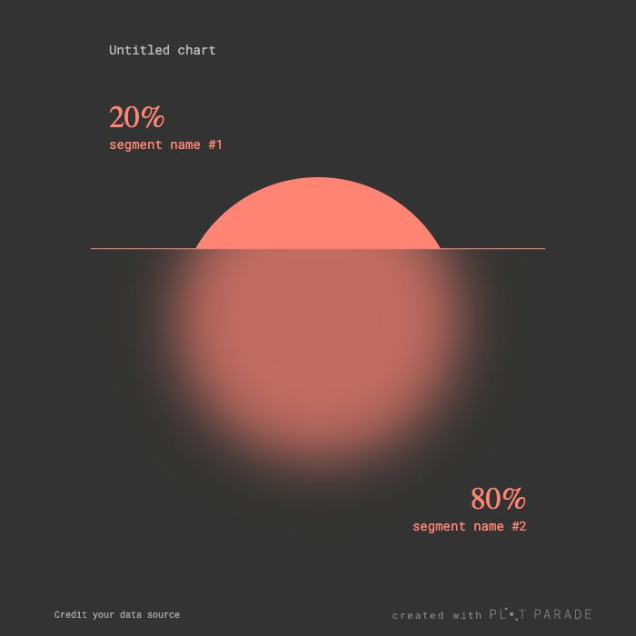
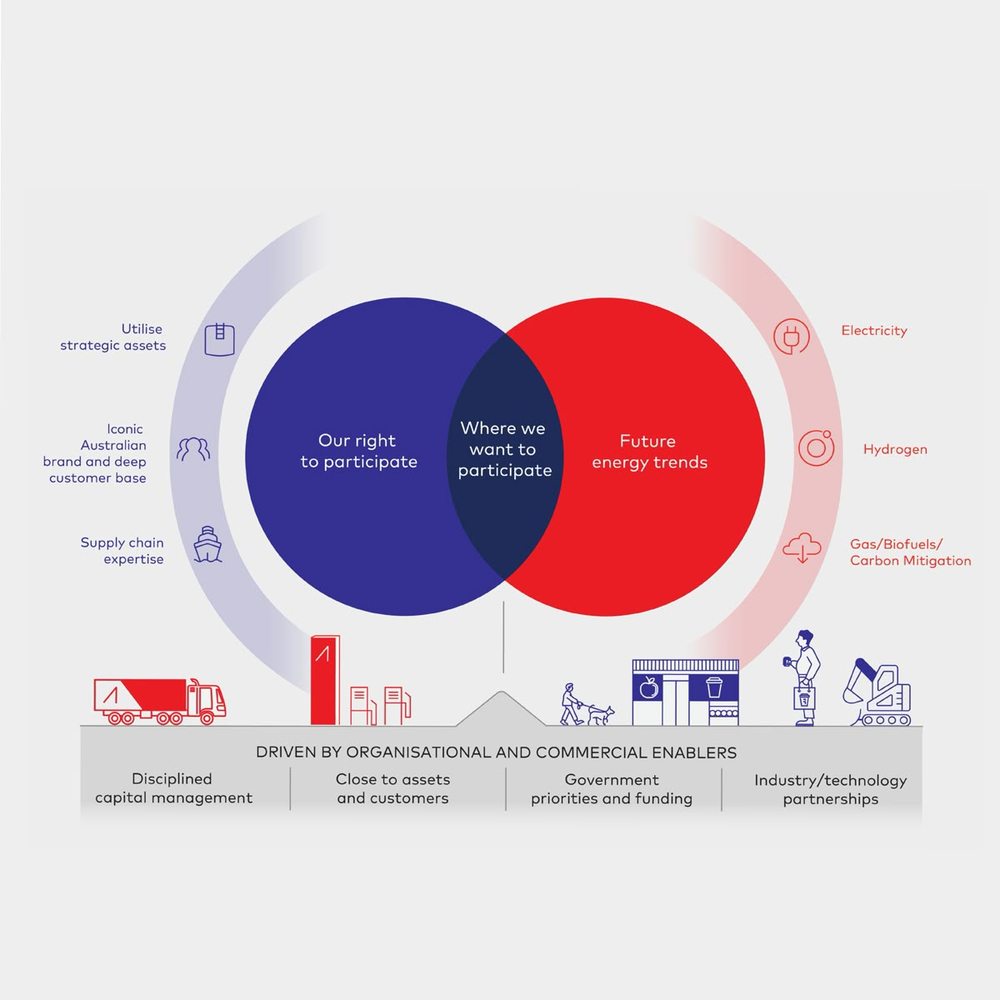
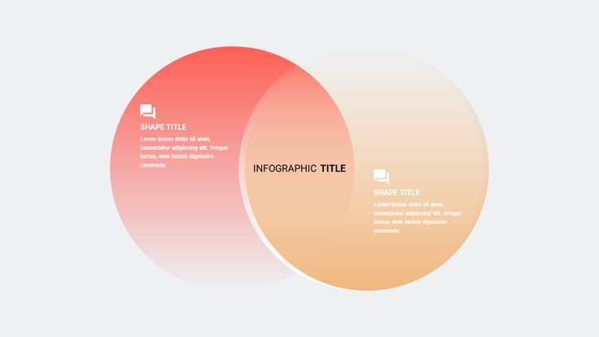
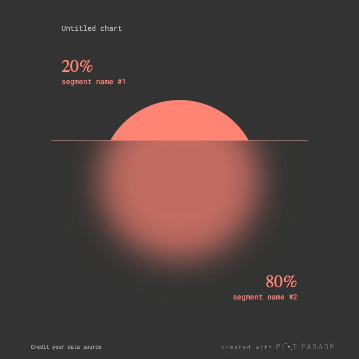

In many Indian homes, women with lower-limb disabilities still do most activities on or near the floor—cooking, bathing, praying, caring for others. Most mobility aids are designed for hospitals and standing postures, so they simply do not reach these ground-level spaces. Families end up managing with painful postures, unsafe improvisations and heavy dependence on caregivers. Low-floor domestic mobility is therefore a real need, but almost invisible in current assistive design.
This project aims to understand how women actually move, rest and work on the floor at home, and where their bodies struggle the most. I want to document these frictions with simple, situated tools and conversations, then co-create possible futures with women, caregivers and clinicians. The goal is to outline grounded design directions for low-floor mobility aids that fit Indian homes, protect the body and quietly return some everyday independence.
WE DESIGNED A CUSTOM CRM STRATEGY THAT BLENDED TECHNOLOGY WITH CREATIVITY TO MAKE EVERY MESSAGE MORE RELEVANT.


We designed a custom made table which enables the user to sit comfortably and maintaiang the right posture. Morever it enables one to sit at ease at all times without feeling anxious or rather agitated.
THE EVOLUTION OF UNOPIÙ'S COMMUNICATION STRATEGY DELIVERED MEASURABLE RESULTS:
This strategic shift transformed communication into a more authentic and engaging experience, reinforcing the bond between Unopiù and its customers.
 





Glossary
- (001)
- (002)
- (003)
- (004)
- (005)
- (006)
- (007)
- (008)
- (009)
- (010)
- (011)
- (012)
- (013)
- (014)